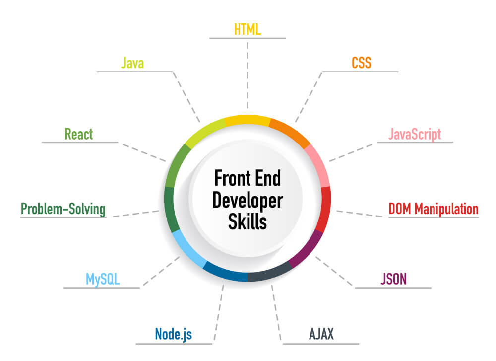

What is Front-end development?
Front-end development is the process of creating the interface of a website. It entails coding details like drop-down menus, fonts, colors, and page layouts. Full-stack developers should also know how to work with front-end technologies like HTML, CSS, and scripting languages such as JavaScript to make websites and applications visually viable and appealing. If you want to transition into full-stack development from back-end development,
Front-end web development, also known as client-side development is the practice of producing HTML, CSS and JavaScript for a website or Web Application so that a user can see and interact with them directly. The challenge associated with front end development is that the tools and techniques used to create the front end of a website change constantly and so the developer needs to constantly be aware of how the field is developing. The objective of designing a site is to ensure that when the users open up the site they see the information in a format that is easy to read and relevant. This is further complicated by the fact that users now use a large variety of devices with varying screen sizes and resolutions thus forcing the designer to take into consideration these aspects when designing the site. They need to ensure that their site comes up correctly in different browsers (cross-browser), different operating systems (cross-platform) and different devices (cross-device), which requires careful planning on the side of the developer.
